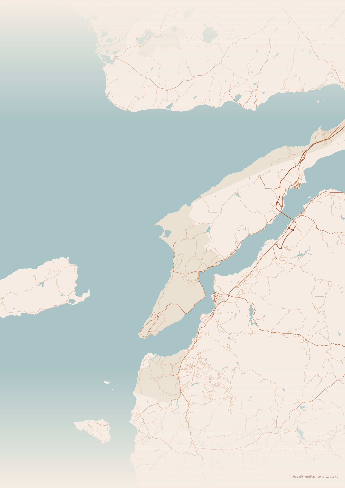

🗺️ Kalibrasyon Stüdyosu
Anchor (ground truth)
Projekte edilmiş (lat/lon → x,y)
Hata vektörü (manuel → projekte)
Anchor RMS:
—
px
Görünürlük
Anchor noktalarını göster
Projekte edilmiş noktaları göster
Tabyaları göster
Etiketleri göster
Manuel-vs-projekte hata oku
Zoom
25%
50%
100%
200%
Tıklama İmleci
Haritaya tıkla: SVG (x,y) ve (lat,lon) okunsun.
Anchor Raporu
Yükleniyor…
Lokasyonlar (
—
)
Yeni Anchor Ekle
Bir lokasyonu "anchor" haline getirmek için listeden seç, haritada doğru yere tıkla, "Anchor yap" dedikten sonra kopya metnini dosyaya yapıştır.
Seçili: yok
Tıklanan konumu anchor yap
Export
📋 Panoya kopyala
Hover: —